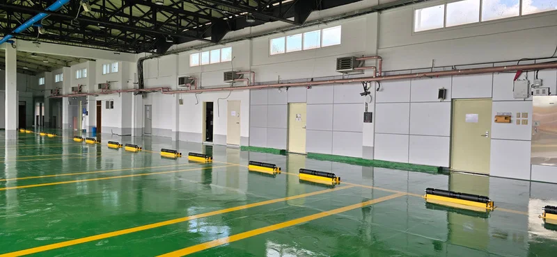
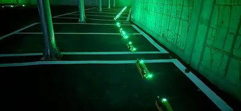
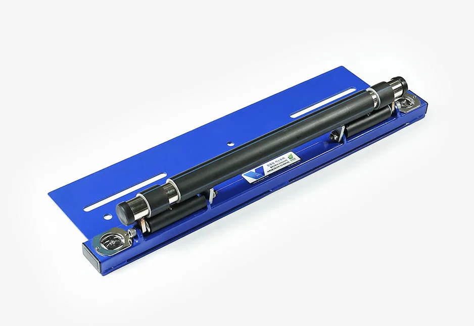

기존 카 스토퍼와의 차이
부딪혀 부서지는 카 스토퍼에서, 받아내는 카 스토퍼로

충격을 흡수해 파손을 억제
타이어가 닿는 힘을 본체가 받아내므로 카 스토퍼 자체가 잘 부서지지 않습니다.

2단계 흡수로 충격을 완화
스프링과 바의 회전으로 차량에 전달되는 충격을 줄입니다.

앵커 볼트로 단단히 고정
앵커 볼트로 노면에 고정하므로 단시간에 시공할 수 있고 잘 밀리지 않습니다.
구조
2단계로 충격을 흡수
![](data:image/svg+xml,%3Csvg%20xmlns%3D%22http%3A%2F%2Fwww.w3.org%2F2000%2Fsvg%22%20viewBox%3D%220%200%20320%20180%22%3E%3Crect%20width%3D%22320%22%20height%3D%22180%22%20rx%3D%2214%22%20fill%3D%22%23EEF4FB%22%2F%3E%3Cpath%20d%3D%22M10%20160h300%22%20stroke%3D%22%239AA0A6%22%20stroke-width%3D%222%22%2F%3E%3Crect%20x%3D%22120%22%20y%3D%22150%22%20width%3D%22150%22%20height%3D%2210%22%20rx%3D%223%22%20fill%3D%22%23F2B90F%22%2F%3E%3Cpath%20d%3D%22M250%20150v-22h14v22z%22%20fill%3D%22%23F2B90F%22%2F%3E%3Ccircle%20cx%3D%2278%22%20cy%3D%2292%22%20r%3D%2266%22%20fill%3D%22%232B2B2E%22%2F%3E%3Ccircle%20cx%3D%2278%22%20cy%3D%2292%22%20r%3D%2230%22%20fill%3D%22%23C9CCD1%22%2F%3E%3Ccircle%20cx%3D%2278%22%20cy%3D%2292%22%20r%3D%229%22%20fill%3D%22%232B2B2E%22%2F%3E%3Cpath%20d%3D%22M158%20132L250%20134%22%20stroke%3D%22%235F6368%22%20stroke-width%3D%225%22%20stroke-linecap%3D%22round%22%2F%3E%3Cpath%20d%3D%22M176%20133l8-9%208%2018%208-18%208%2018%208-18%208%2018%208-9%22%20fill%3D%22none%22%20stroke%3D%22%230B5CAD%22%20stroke-width%3D%223%22%20stroke-linejoin%3D%22round%22%2F%3E%3Ccircle%20cx%3D%22156%22%20cy%3D%22132%22%20r%3D%2215%22%20fill%3D%22%231D1D1F%22%2F%3E%3Ccircle%20cx%3D%22156%22%20cy%3D%22132%22%20r%3D%225%22%20fill%3D%22%23C9CCD1%22%2F%3E%3Cpath%20d%3D%22M196%2096h34%22%20stroke%3D%22%23D93025%22%20stroke-width%3D%224%22%20stroke-linecap%3D%22round%22%2F%3E%3Cpath%20d%3D%22M222%2088l10%208-10%208%22%20fill%3D%22none%22%20stroke%3D%22%23D93025%22%20stroke-width%3D%224%22%20stroke-linecap%3D%22round%22%20stroke-linejoin%3D%22round%22%2F%3E%3C%2Fsvg%3E)
STEP 1
스톱 바가 받아냄
타이어가 닿으면 바가 뒤로 움직이고 스프링이 충격을 흡수합니다.
![](data:image/svg+xml,%3Csvg%20xmlns%3D%22http%3A%2F%2Fwww.w3.org%2F2000%2Fsvg%22%20viewBox%3D%220%200%20320%20180%22%3E%3Crect%20width%3D%22320%22%20height%3D%22180%22%20rx%3D%2214%22%20fill%3D%22%23EEF4FB%22%2F%3E%3Cpath%20d%3D%22M10%20160h300%22%20stroke%3D%22%239AA0A6%22%20stroke-width%3D%222%22%2F%3E%3Crect%20x%3D%22120%22%20y%3D%22150%22%20width%3D%22150%22%20height%3D%2210%22%20rx%3D%223%22%20fill%3D%22%23F2B90F%22%2F%3E%3Cpath%20d%3D%22M250%20150v-22h14v22z%22%20fill%3D%22%23F2B90F%22%2F%3E%3Ccircle%20cx%3D%2288%22%20cy%3D%2292%22%20r%3D%2266%22%20fill%3D%22%232B2B2E%22%2F%3E%3Ccircle%20cx%3D%2288%22%20cy%3D%2292%22%20r%3D%2230%22%20fill%3D%22%23C9CCD1%22%2F%3E%3Ccircle%20cx%3D%2288%22%20cy%3D%2292%22%20r%3D%229%22%20fill%3D%22%232B2B2E%22%2F%3E%3Cpath%20d%3D%22M168%20132L250%20134%22%20stroke%3D%22%235F6368%22%20stroke-width%3D%225%22%20stroke-linecap%3D%22round%22%2F%3E%3Cpath%20d%3D%22M184%20133l6-9%206%2018%206-18%206%2018%206-18%206%2018%206-18%206%2018%206-9%22%20fill%3D%22none%22%20stroke%3D%22%230B5CAD%22%20stroke-width%3D%223%22%20stroke-linejoin%3D%22round%22%2F%3E%3Ccircle%20cx%3D%22166%22%20cy%3D%22132%22%20r%3D%2215%22%20fill%3D%22%231D1D1F%22%2F%3E%3Ccircle%20cx%3D%22166%22%20cy%3D%22132%22%20r%3D%225%22%20fill%3D%22%23C9CCD1%22%2F%3E%3Cpath%20d%3D%22M146%20108a26%2026%200%200%201%2040%200%22%20fill%3D%22none%22%20stroke%3D%22%23D93025%22%20stroke-width%3D%224%22%20stroke-linecap%3D%22round%22%2F%3E%3Cpath%20d%3D%22M178%2098l9%2010-13%202%22%20fill%3D%22none%22%20stroke%3D%22%23D93025%22%20stroke-width%3D%224%22%20stroke-linecap%3D%22round%22%20stroke-linejoin%3D%22round%22%2F%3E%3C%2Fsvg%3E)
STEP 2
바의 회전으로 힘을 분산
바의 외주가 회전해 남은 힘을 완화합니다. 차량과 스토퍼를 모두 보호합니다.
동영상
영상으로 보기
특징
6가지 특징
충격 흡수 설계
주차 충격을 흡수·완화. 차량과 스토퍼를 모두 보호해 고장을 크게 줄입니다.

고내구·장수명
50만 회 반복 작동 시험에서도 고장 없음. 내구 소재·내후성 구조로 교환 주기를 늘릴 수 있습니다.
넘어감 억제
구동륜이 스토퍼에 닿은 상태에서 실수로 가속 페달을 밟았을 때 넘어가는 것을 억제합니다.

편안한 주차감
부드러운 승차감으로 임산부, 장애가 있는 분, 고령자, 어린이에게도 안심할 수 있는 주차 환경을 제공합니다.

경제적
파손을 막아 보수·수리 비용을 크게 절약. 유지 비용을 최소화합니다.

범용성
실내외·각종 노면·차종과 구획에 대응. 공사 현장부터 일반 주차장, EV 구획까지 설치할 수 있습니다.
설치 장면
실내외, 다양한 현장에서
실내외를 가리지 않고 차량 종류와 이용 빈도에 맞춰 설치할 수 있습니다.

불특정 다수 차량이 이용
공원·공공시설
잘 부서지지 않고, 눈에 띄는 색상으로 야간에도 주차 위치를 알기 쉽습니다. LED 사양도 선택할 수 있습니다.

부지 내 안전 대책
공장·창고
트럭과 지게차가 오가는 현장에. 충격을 흡수하는 구조로 카 스토퍼의 파손과 수리 수고를 줄입니다.

이용 빈도가 높은 주차장
고속도로 시설
출입이 많은 주차장에서도 반복되는 충격을 견디는 내구성을 갖췄습니다. 트럭·버스에는 대형차용을 설치합니다.

대형 차량에도 대응
발전소·대형 차량이 출입하는 시설
대형 차량이 출입하는 시설에는 수주형 대형차용 모델로 대응합니다. 차량과 설비를 모두 보호합니다.

충전 설비 보호
EV 충전 공간
충전 설비 앞에 설치해 차량 접촉으로부터 설비를 보호합니다. 녹에 강한 SUS 재질 모델도 선택할 수 있습니다.

LED로 위치 표시
야간·실내 주차장
LED 장착 모델은 어두운 곳에서도 카 스토퍼 위치를 알 수 있습니다. 사진은 야간 점등 모습입니다.
옵션
LED 솔라 램프(옵션)
전원 공사가 필요 없는 솔라 충전식 LED 램프입니다. 야간이나 실내에서도 카 스토퍼 위치를 한눈에 알 수 있습니다.
- 전원이 필요 없는 솔라 충전 방식
- 낮에 충전하고 야간에는 자동 점등
- 어두운 주차장에서도 높은 시인성
LED 장착 형식(CSJ-N-SL·BL·DL)에서 선택하실 수 있습니다.


라인업
타입별 라인업
설치 장소와 차량에 맞춰 4가지 타입·12개 형식 중에서 고를 수 있습니다.
독립형
승용차용 기본 타입입니다. 1대분씩 설치합니다.

CSJ-N-SB
독립형
승용차용 기본 모델입니다.
- 용도
- 승용차용
- 폭 × 깊이 × 높이
- 770 × 160 × 115 mm
- 색상
- 노랑·파랑·녹색·분홍·빨강

CSJ-N-SL
독립형 LED 포함
LED 램프를 갖춰 야간이나 실내에서도 위치를 알 수 있습니다.
- 용도
- 승용차용
- 폭 × 깊이 × 높이
- 770 × 160 × 115 mm
- 색상
- 노랑·파랑·녹색·분홍·빨강

CSJ-N-SS
독립형 SUS 재질
본체 전체가 스테인리스제인 모델입니다.
- 용도
- 승용차용
- 폭 × 깊이 × 높이
- 770 × 160 × 115 mm
- 색상
- 은색
프리미엄 독립형
본체를 커버로 덮은 승용차용 상위 타입입니다.

CSJ-N-BB
프리미엄 독립형
상위 타입의 기본 모델입니다.
- 용도
- 승용차용
- 폭 × 깊이 × 높이
- 830 × 170 × 115 mm
- 색상
- 노랑·파랑·녹색·분홍·빨강

CSJ-N-BL
프리미엄 독립형 LED 포함
LED 램프를 갖춘 상위 모델입니다.
- 용도
- 승용차용
- 폭 × 깊이 × 높이
- 830 × 170 × 115 mm
- 색상
- 노랑·파랑·녹색·분홍·빨강

CSJ-N-BS
프리미엄 독립형 SUS 재질
본체 전체가 스테인리스제인 상위 모델입니다.
- 용도
- 승용차용
- 폭 × 깊이 × 높이
- 830 × 170 × 115 mm
- 색상
- 은색
조합형
베이스 플레이트와 일체가 된 승용차용 타입입니다.

CSJ-N-DB
조합형
조합형의 기본 모델입니다.
- 용도
- 승용차용
- 폭 × 깊이 × 높이
- 750 × 230 × 115 mm
- 색상
- 노랑·파랑·녹색·분홍·빨강

CSJ-N-DL
조합형 LED 포함
LED 램프를 갖춘 조합형입니다.
- 용도
- 승용차용
- 폭 × 깊이 × 높이
- 800 × 240 × 115 mm
- 색상
- 노랑·파랑·녹색·분홍·빨강

CSJ-N-DS
조합형 SUS 재질
본체 전체가 스테인리스제인 조합형입니다.
- 용도
- 승용차용
- 폭 × 깊이 × 높이
- 750 × 230 × 115 mm
- 색상
- 은색
저상 차량용·대형차용
차고가 낮은 차량이나 트럭·버스 등 대형차에 대응하는 타입입니다.

CSJ-N-LB
저차고
높이를 95 mm로 낮춘, 차고가 낮은 차량용 모델입니다.
- 용도
- 저차고용
- 폭 × 깊이 × 높이
- 770 × 160 × 95 mm
- 색상
- 노랑·파랑·녹색·분홍·빨강

CSJ-O-I01
주문형
트럭·버스 등 대형차용 모델입니다.
- 용도
- 트럭·버스용
- 폭 × 깊이 × 높이
- 1,140 × 360 × 255 mm / 1,140 × 250 × 180 mm
- 색상
- 노랑·빨강

CSJ-O-I02
주문형
건설 현장의 믹서 트럭용 이동형입니다. 무선식 이동 핸들은 옵션입니다.
- 용도
- 대형차(상용차)
- 폭 × 깊이 × 높이
- 1,655 × 360 × 1,070 mm
- 색상
- 노랑
도입 절차
문의부터 설치까지

문의하기
희망 대수와 설치 장소를 알려 주십시오.

설치 조건 확인
주차 구획 수, 포장 종류, 차량 지상고, 야간 시인성을 확인합니다.
형식 선정·견적
차량과 구획에 맞는 형식·색상을 제안합니다. 대형차용은 수주 생산입니다.
납품·설치
앵커 볼트로 고정하므로 단시간에 시공할 수 있습니다.
넘어감 억제에 관한 주의
본 제품은 차량이 넘어가는 것을 완전히 방지하는 것이 아닙니다. 다음과 같은 경우에는 넘어갈 우려가 있습니다.
- 일정 속도 이상으로 진입한 경우
- 스토퍼에서 떨어진 위치에서 가속해 진입한 경우(구동륜이 스토퍼에 닿아 있지 않은 경우)
- 사륜구동차나 토크가 큰 차량의 경우